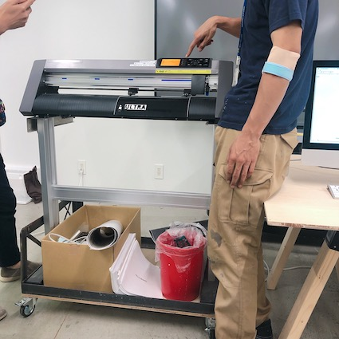
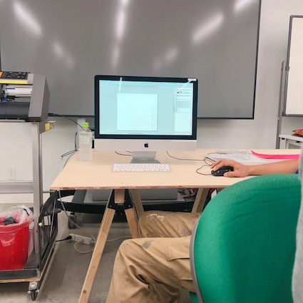
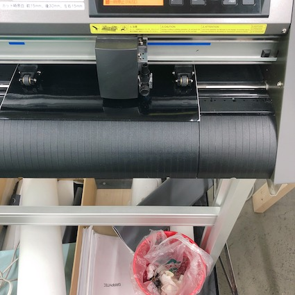
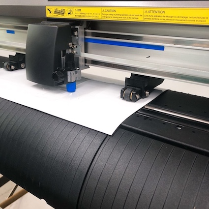
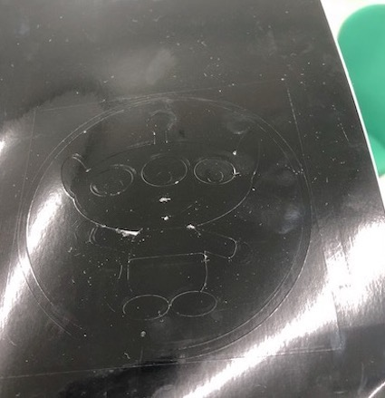
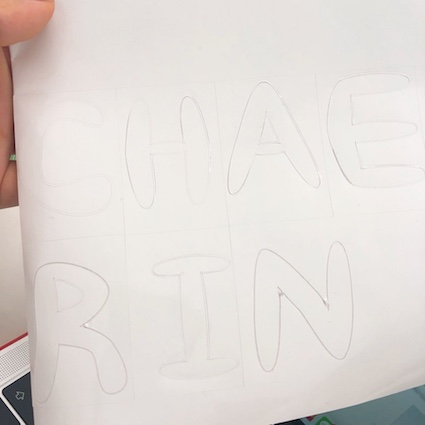
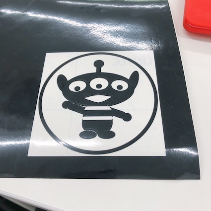

🌟ᴄᴜᴛᴛɪɴɢ ᴘʟᴏᴛᴛᴇʀ🌟
 
機械をつけて用紙を入れた後、後ろにあるロックを下す。機械にいる画面で3番を押す。
イラストプログラムで作った、ファイルを機械と連結されているコンピューターに入れる。
 
コンピューターで送信を押すと、カッティング刀が紙の上をカッティングし始める。
 
ロックを解いて用紙を取り除くと、紙にファイルと同じ絵でカッティングになって出ている。

カッティングになった部分のステッカーを時は、望む形のステッカーがなる。
その状態で上に透明なステッカーを張る。 これはステッカーの位置が動かないようにするためてしまうからだ。
つけたい部分にそのまま付され、透明なステッカーをゆっくり剥したら完成である。
<反省点・改善点・分かったこと>
機械を使用して横にいる先生や友人の助けをたくさん受けた。 最初は作りたい絵であれば、全部されると思って色を入れて少し複雑なキャラクターを作った。 しかし、色は入れなかった。部分ごとに色を変えている方法を知りたい。
<ʏᴏᴜᴛᴜʙᴇ>